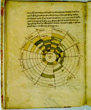

Ambrosius Theodosius Macrobius, Commentarius in Ciceronis Somnium Scipionis, gevolgd door: M. Tullius Cicero, Somnium Scipionis. Latijn. Handschrift op perkament, 56 ff., 135/160 x 110 mm. Frankrijk, eerste helft van de twaalfde eeuw. -- (BPL 168)
In Cicero’s De droom van Scipio verschijnt P. Cornelius Scipio Maior, de overwinnaar van Hannibal in 202 v.Chr., vanuit het sterrenrijk aan zijn kleinzoon, die ter onderscheiding P. Cornelius Scipio Minor wordt genoemd. Dit stukje Cicero is ons alleen bewaard in handschriften met het veelgelezen commentaar van Macrobius uit de eerste helft van de vijfde eeuw. Het getoonde handschrift is zeker niet het belangrijkste Leidse manuscript van deze tekst, maar het bevat wel een duidelijk diagram van het Ptolemeïsche wereldbeeld, met in het midden de aarde, daaromheen de sferen van de zon en de planeten en in de buitenste ring de tekens van de dierenriem.
Literatuur
- [P.C. Molhuysen], Codices Bibliothecae Publicae Latini. Lugduni Batavorum 1912 ( = Bibliotheca Universitatis Leidensis Codices manuscripti. III), p. 85.
- M. Destombes, Mappemondes A.D. 1200-1500. Catalogue préparé par la Commission des Cartes Anciennes de l’Union Géographique Internationale. Amsterdam 1964 (= Monumenta cartographica vetustioris aevi. Vol. I).
- Vergelijk: B.C. Barker-Benfield, in: Texts and transmission. A survey of the Latin classics. Ed. by L.D. Reynolds. Oxford 1983, p. 224-232.
| vorige pagina | top pagina |